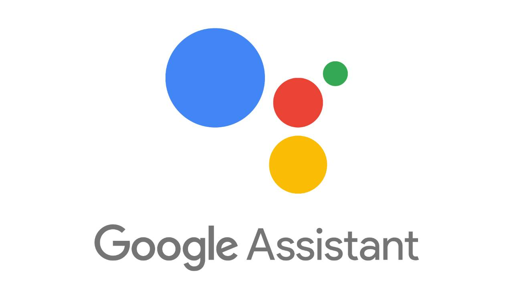

¿Que es la Inteligencia Artificial?

La inteligencia artificial (IA) es un campo de la informática que se centra en crear sistemas que puedan realizar tareas que normalmente requieren inteligencia humana.
Se basa en la combinación de algoritmos para crear máquinas que tengan capacidades similares a las de los seres humanos.
¿Donde la podemos encontrar?
La inteligencia artificial (IA) está transformando nuestra vida diaria. Desde nuestros teléfonos hasta la medicina, la IA está presente en muchos aspectos. Algunos ejemplos comunes son:
-
Asistentes Virtuales
Alexa y Google Assistant son ejemplos de IA que responden a nuestras preguntas y realizan tareas.

-
Recomendaciones Personalizadas
Plataformas como Spotify o Netflix utilizan IA para sugerir películas, series o canciones basadas en nuestros gustos.
-
Vehículos autónomos
Coches que se conducen solos gracias a sensores y algoritmos de IA.
-
Chatbots
Los chatbot son programas de computadora diseñado para simular conversaciones humanas, ya sea por escrito o por voz. Se utiliza para interactuar con usuarios y brindar información o realizar tareas de manera automatizada.
Ejemplos

La importancia de la IA
La inteligencia artificial (IA) está revolucionando la forma en que vivimos y trabajamos, ofreciendo soluciones innovadoras a problemas complejos del mundo real. Su importancia radica en su capacidad para:
-
Automatizar tareas:
La IA puede realizar tareas repetitivas y rutinarias de manera más eficiente y precisa que los humanos, liberando tiempo para que las personas se enfoquen en actividades más creativas y estratégicas.
-
Analizar grandes cantidades de datos
La IA puede procesar y analizar enormes volúmenes de datos a una velocidad inimaginable, permitiendo identificar patrones y tendencias que serían imposibles de detectar por el ojo humano.

-
Aprender y adaptarse(Machine Learning)
Los algoritmos de aprendizaje automático permiten a las máquinas mejorar su desempeño con el tiempo, aprendiendo de los datos y adaptándose a nuevas situaciones.